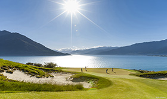
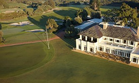
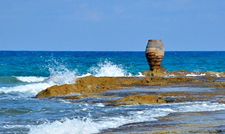

Marquee courses driving Chinese visitors to New Zealand
According to Tourism New Zealand’s latest Golf Tourism New Zealand Progress Report, released March 2018, Marquee course international rounds saw a 37% increase in the number of Chinese golfers over the 2017 calendar year, and a 51% increase in players from ‘other Asia’ (which includes India, South East Asia, the Philippines, and Indonesia).
Read more

New Zealand: the ultimate destination for wealthy Europeans
More than 300 agencies that cater solely for the world’s high net worth individuals have voted New Zealand their “Most Preferred Destination”. Traveller Made is a network community for luxury travel designers and suppliers including hotels and experience providers. It is an exclusive invitation-only network with a two-year application process for membership.
Read more

Australia on the list of greatest international golf courses
Thirteen Australian golf courses are featured in the Golf Digest’s latest list of the greatest international golf courses, a combination of the influential publication’s combined ‘America's 100 Greatest’ and ‘World 100’ lists.Royal Melbourne West (pictured) was the highest ranked Australian course on the list, coming in at number five.
Read more
World’s 50 best restaurants 2017 campaign picks up award
Tourism Australia and The Cru won Best PR-Led Brand Partnership Campaign for the World’s 50 Best Restaurants 2017 campaign at the Mumbrella CommsCon Awards last week. Australia was only the second destination outside of London to host The World’s 50 Best Restaurants.
Read more

Survey: All inclusive holidays cheaper in Greece for 2018 - the best value destinations
All-inclusive holidays in Greece, even in its classical destinations, are cheaper this summer for British tourists, according to a survey carried out by the TravelSupermarket platform.
Read more